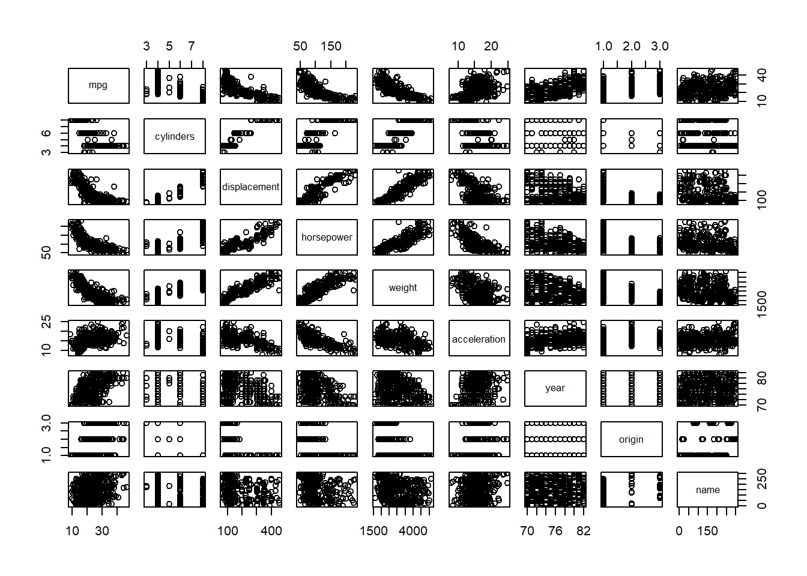

Chapter 3 Introduction to R
In this lab, we will introduce some simple R commands. The best way to learn a new language
is to try out the commands. R can be downloaded from
http://cran.r-project.org/
We recommend that you run R within an integrated development environment (IDE) such as RStudio, which can be freely downloaded from
http://rstudio.com
The RStudio website also provides a cloud-based version of R, which does not require installing any software.
3.1 Basic Commands
R-console opens when you start R R command prompt is > (the greater than symbol). Interaction with R takes place at the command prompt
For common problems in writing/running R code, see an excellent recap Ch 3.4 Common problems in R for Data Science (‘https://r4ds.had.co.nz/’) by Hadley Wickham and Garret Grolemund.
For example entering 2 + 2 and hitting enter, R interprets and executes the command immediately returning the value 4 followed by anpother command prompt.
Interacting with the interpreter
The R language includes the usual arithmetic operations
‘+’ addition
‘-’ subtraction
’*’ multiplication
‘/’ division
‘^’ or ’**’ exponentiation
2 + 3 # addition (note spaces do not matter, just help readability)## [1] 52 - 3 # subtraction## [1] -12 * 3 # multiplication## [1] 62 / 3 # division## [1] 0.66666672^3 # exponentiation## [1] 82**3 # equivalent to 2^3## [1] 8Combined arithmeric operations
4^2 - 3^2## [1] 71 - 6 + 4## [1] -1(4^2) - (3*2) # same as 4^2 - 3*2## [1] 10(4 + 3)^2 # not the same as 4^2 + 3^2## [1] 492--3## [1] 52 - -3 # same as 2--3 (note however the clarified expositon)## [1] 5R functions
log(100) # natural (e-base) logarithm## [1] 4.60517log10(100) # 10-base## [1] 2log(100, base = 10) # 10-base## [1] 2log(100, base = 2) # 2-base## [1] 6.643856help(log) # get help (you can equally weel writ ?log to get help)## httpd 도움말 서버를 시작합니다 ... 완료example("log") # some basic exmples of using log##
## log> log(exp(3))
## [1] 3
##
## log> log10(1e7) # = 7
## [1] 7
##
## log> x <- 10^-(1+2*1:9)
##
## log> cbind(x, log(1+x), log1p(x), exp(x)-1, expm1(x))
## x
## [1,] 1e-03 9.995003e-04 9.995003e-04 1.000500e-03 1.000500e-03
## [2,] 1e-05 9.999950e-06 9.999950e-06 1.000005e-05 1.000005e-05
## [3,] 1e-07 1.000000e-07 1.000000e-07 1.000000e-07 1.000000e-07
## [4,] 1e-09 1.000000e-09 1.000000e-09 1.000000e-09 1.000000e-09
## [5,] 1e-11 1.000000e-11 1.000000e-11 1.000000e-11 1.000000e-11
## [6,] 1e-13 9.992007e-14 1.000000e-13 9.992007e-14 1.000000e-13
## [7,] 1e-15 1.110223e-15 1.000000e-15 1.110223e-15 1.000000e-15
## [8,] 1e-17 0.000000e+00 1.000000e-17 0.000000e+00 1.000000e-17
## [9,] 1e-19 0.000000e+00 1.000000e-19 0.000000e+00 1.000000e-19args(log) # get the arguments of log-function## function (x, base = exp(1))
## NULLlog(100, 10) # if argument names are dropped, R fills them by position## [1] 2R uses functions to perform operations. To run a function called funcname, we type funcname(input1, input2), where the inputs (or arguments) input1 and input2 tell R
how to run the function. A function can have any number of inputs. For example, to create a vector of numbers, we use the function c() (for concatenate). Any numbers inside the parentheses are joined together. The following command
instructs R to join together the numbers 1, 3, 2, and 5, and to save them as a vector named x. When we type x, it gives us back the vector.
x <- c(1, 3, 2, 5)
x## [1] 1 3 2 5Note that the > is not part of the command; rather, it is printed by R to indicate that it is ready for another command to be entered. We can also save things using = rather than <-:
x = c(1, 6, 2)
x## [1] 1 6 2y = c(1, 4, 3)Hitting the up arrow multiple times will display the previous commands, which can then be edited. This is useful since one often wishes to repeat a similar command. In addition, typing ?funcname will always cause R to open a new help file window with additional information about the function funcname().
We can tell R to add two sets of numbers together. It will then add the first number from x to the first number from y, and so on. However, x and y should be the same length.
We can check their length using the length() function.
length(x)## [1] 3length(y)## [1] 3x + y## [1] 2 10 5The ls() function allows us to look at a list of all of the objects, such as data and functions, that we have saved so far. The rm() function can be used to delete any that we don’t
want.
ls()## [1] "x" "y"rm(x, y)
ls()## character(0)It’s also possible to remove all objects at once:
rm(list = ls())The matrix() function can be used to create a matrix of numbers.
Before we use the matrix() function, we can learn more about it:
?matrixThe help file reveals that the matrix() function takes a number of inputs, but for now we focus on the first three: the data (the entries in the matrix), the number of rows, and the number of columns.
First, we create a simple matrix.
x <- matrix(data = c(1, 2, 3, 4), nrow = 2, ncol = 2)
x## [,1] [,2]
## [1,] 1 3
## [2,] 2 4Note that we could just as well omit typing data=, nrow=, and ncol= in the matrix() command above: that is, we could just type
x <- matrix(c(1, 2, 3, 4), 2, 2)and this would have the same effect. However, it can sometimes be useful to specify the names of the arguments passed in, since otherwise R will assume that the function arguments are passed into the function in the same order that is given in the function’s help file. As this example illustrates, by default R creates matrices by successively filling in columns. Alternatively, the byrow = TRUE option can be used to populate the matrix in order of the rows.
matrix(c(1, 2, 3, 4), 2, 2, byrow = TRUE)## [,1] [,2]
## [1,] 1 2
## [2,] 3 4Notice that in the above command we did not assign the matrix to a value such as x. In this case the matrix is printed to the screen but is not saved for future calculations.
The sqrt() function returns the square root of each element of a vector or matrix. The command
x^2 raises each element of x to the power 2; any powers are possible, including fractional or negative powers.
sqrt(x)## [,1] [,2]
## [1,] 1.000000 1.732051
## [2,] 1.414214 2.000000x^2## [,1] [,2]
## [1,] 1 9
## [2,] 4 16The rnorm() function generates a vector of random
normal variables, with first argument n the sample size. Each
time we call this function, we will get a different answer. Here we
create two correlated sets of numbers, x and y, and use
the cor() function to compute the correlation between
them.
x <- rnorm(50)
y <- x + rnorm(50, mean = 50, sd = .1)
cor(x, y)## [1] 0.9953927By default, rnorm() creates standard normal random variables with a mean of \(0\) and a standard deviation of \(1\). However, the mean and standard deviation can be altered using the mean and sd arguments,
as illustrated above. Sometimes we want our code to reproduce the exact same set of random numbers; we can use the set.seed() function to do this. The set.seed() function takes an (arbitrary) integer argument.
set.seed(1303)
rnorm(50)## [1] -1.1439763145 1.3421293656 2.1853904757 0.5363925179 0.0631929665
## [6] 0.5022344825 -0.0004167247 0.5658198405 -0.5725226890 -1.1102250073
## [11] -0.0486871234 -0.6956562176 0.8289174803 0.2066528551 -0.2356745091
## [16] -0.5563104914 -0.3647543571 0.8623550343 -0.6307715354 0.3136021252
## [21] -0.9314953177 0.8238676185 0.5233707021 0.7069214120 0.4202043256
## [26] -0.2690521547 -1.5103172999 -0.6902124766 -0.1434719524 -1.0135274099
## [31] 1.5732737361 0.0127465055 0.8726470499 0.4220661905 -0.0188157917
## [36] 2.6157489689 -0.6931401748 -0.2663217810 -0.7206364412 1.3677342065
## [41] 0.2640073322 0.6321868074 -1.3306509858 0.0268888182 1.0406363208
## [46] 1.3120237985 -0.0300020767 -0.2500257125 0.0234144857 1.6598706557We use set.seed() throughout the labs whenever we perform calculations involving random quantities. In general this should allow the user to reproduce our results. However, as new versions of R become available, small discrepancies may arise between this book and the output from R.
The mean() and var() functions can be used to compute the mean and variance of a vector of numbers. Applying sqrt() to the output of var() will give the standard deviation. Or we can simply use the
sd() function.
set.seed(3)
y <- rnorm(100)
mean(y)## [1] 0.01103557var(y)## [1] 0.7328675sqrt(var(y))## [1] 0.8560768sd(y)## [1] 0.85607683.2 Graphics
The plot() function is the primary way to plot data in R. For instance, plot(x, y) produces a scatterplot of the numbers in x versus the numbers in
y. There are many additional options that can be passed in to the plot() function. For example,
passing in the argument xlab will result in a label on the \(x\)-axis. To find out more information about the plot() function,
type ?plot.
x <- rnorm(100)
y <- rnorm(100)
plot(x, y)
plot(x, y, xlab = "this is the x-axis",
ylab = "this is the y-axis",
main = "Plot of X vs Y")
We will often want to save the output of an R plot. The command that we
use to do this will depend on the file type that we would like to create. For instance, to create a pdf, we use the pdf() function, and to create a jpeg, we use the jpeg() function.
pdf("Figure.pdf")
plot(x, y, col = "green")
dev.off()## png
## 2The function dev.off() indicates to R that we are done creating the plot.
Alternatively, we can simply copy the plot window and paste it into an appropriate file type, such as a Word document.
The function seq() can be used to create a sequence of numbers. For instance, seq(a, b) makes a vector of integers between a and b.
There are many other options: for instance, seq(0, 1, length = 10) makes a sequence of 10 numbers that are equally spaced between 0 and 1. Typing 3:11 is a shorthand for seq(3, 11) for integer arguments.
x <- seq(1, 10)
x## [1] 1 2 3 4 5 6 7 8 9 10x <- 1:10
x## [1] 1 2 3 4 5 6 7 8 9 10x <- seq(-pi, pi, length = 50)We will now create some more sophisticated plots. The contour() function produces a in order to represent three-dimensional data; it is like a topographical map.
It takes three arguments:
- A vector of the
xvalues (the first dimension), - A vector of the
yvalues (the second dimension), and - A matrix whose elements correspond
to the
zvalue (the third dimension) for each pair of (x,y) coordinates.
As with the plot() function, there are many other inputs that can be used to fine-tune the output of the contour() function. To learn more about these, take a look at the help file by typing ?contour.
y <- x
f <- outer(x, y, function(x, y) cos(y) / (1 + x^2))
contour(x, y, f)
contour(x, y, f, nlevels = 45, add = T)
fa <- (f - t(f)) / 2
contour(x, y, fa, nlevels = 15)
The image() function works the same way as contour(), except that it produces a color-coded plot whose colors depend on the z value. This is
known as a , and is sometimes used to plot temperature in weather forecasts. Alternatively, persp() can be used to produce a three-dimensional plot.
The arguments theta and phi control the angles at which the plot is viewed.
image(x, y, fa)
persp(x, y, fa)
persp(x, y, fa, theta = 30)
persp(x, y, fa, theta = 30, phi = 20)
persp(x, y, fa, theta = 30, phi = 70)
persp(x, y, fa, theta = 30, phi = 40)
3.3 Indexing Data
We often wish to examine part of a set of data. Suppose that our data is stored in the matrix A.
A <- matrix(1:16, 4, 4)
A## [,1] [,2] [,3] [,4]
## [1,] 1 5 9 13
## [2,] 2 6 10 14
## [3,] 3 7 11 15
## [4,] 4 8 12 16Then, typing
A[2, 3]## [1] 10will select the element corresponding to the second row and the third column. The first number after the open-bracket symbol [
always refers to the row, and the second number always refers to the column. We can also select multiple rows and columns at a time, by providing vectors as the indices.
A[c(1, 3), c(2, 4)]## [,1] [,2]
## [1,] 5 13
## [2,] 7 15A[1:3, 2:4]## [,1] [,2] [,3]
## [1,] 5 9 13
## [2,] 6 10 14
## [3,] 7 11 15A[1:2, ]## [,1] [,2] [,3] [,4]
## [1,] 1 5 9 13
## [2,] 2 6 10 14A[, 1:2]## [,1] [,2]
## [1,] 1 5
## [2,] 2 6
## [3,] 3 7
## [4,] 4 8The last two examples include either no index for the columns or no index for the rows. These indicate that R should include all columns or all rows, respectively. R treats a single row or column of a matrix as a vector.
A[1, ]## [1] 1 5 9 13The use of a negative sign - in the index tells R to keep all rows or columns except those indicated in the index.
A[-c(1, 3), ]## [,1] [,2] [,3] [,4]
## [1,] 2 6 10 14
## [2,] 4 8 12 16A[-c(1, 3), -c(1, 3, 4)]## [1] 6 8The dim() function outputs the number of rows followed by the number of columns of a given matrix.
dim(A)## [1] 4 43.4 Loading Data
For most analyses, the first step involves importing a data set into R.
The read.table() function is one of the primary ways to do this. The help file contains details about how to use this function.
We can use the function write.table() to export data.
Before attempting to load a data set, we must make sure that R
knows to search for the data in the proper directory. For example, on
a Windows system one could select the directory using the
Change dir ... option under the File menu. However, the details of how to do this depend on the operating system (e.g. Windows, Mac, Unix) that is being used, and so we do not give further details here.
We begin by loading in the Auto data set. This data is part of the ISLR2 library, discussed in Chapter 3.
To illustrate the read.table() function, we load it now from a text file, Auto.data, which you can find on the textbook website.
The following command will load the Auto.data file into R and store it as an object called Auto, in a format referred to as a . Once the data has been loaded, the View() function can be used to view it in a spreadsheet-like window. (This function can sometimes be a bit finicky. If you have trouble using it, then try the head() function instead.) The head() function can also be used to view the first few rows of the data.
Auto <- read.table("Auto.data")
View(Auto)
head(Auto)## V1 V2 V3 V4 V5 V6 V7 V8
## 1 mpg cylinders displacement horsepower weight acceleration year origin
## 2 18.0 8 307.0 130.0 3504. 12.0 70 1
## 3 15.0 8 350.0 165.0 3693. 11.5 70 1
## 4 18.0 8 318.0 150.0 3436. 11.0 70 1
## 5 16.0 8 304.0 150.0 3433. 12.0 70 1
## 6 17.0 8 302.0 140.0 3449. 10.5 70 1
## V9
## 1 name
## 2 chevrolet chevelle malibu
## 3 buick skylark 320
## 4 plymouth satellite
## 5 amc rebel sst
## 6 ford torinoNote that Auto.data is simply a text file, which you could
alternatively open on your computer using a standard text editor. It
is often a good idea to view a data set using a text editor or other
software such as Excel before loading it into R.
This particular data set has not been loaded correctly, because R has assumed that the variable names are part of the data and so has included them in the first row. The data set also includes a number of missing observations, indicated by
a question mark ?. Missing values are a common occurrence in real data sets. Using the option header = T (or header = TRUE) in the read.table() function
tells R that the first line of the file contains the variable names, and using the option na.strings tells R that any time it sees a particular character or set of characters (such as a question mark), it should
be treated as a missing element of the data matrix.
Auto <- read.table("Auto.data", header = T, na.strings = "?", stringsAsFactors = T)
View(Auto)The stringsAsFactors = T argument tells R that any variable containing character strings should be interpreted as a qualitative variable, and that each distinct character string represents a distinct level for that qualitative variable.
An easy way to load data from Excel into R is to save it as a csv (comma-separated values) file, and then use the read.csv() function.
Auto <- read.csv("Auto.csv", na.strings = "?", stringsAsFactors = T)
View(Auto)
dim(Auto)## [1] 392 9Auto[1:4, ]## mpg cylinders displacement horsepower weight acceleration year origin
## 1 18 8 307 130 3504 12.0 70 1
## 2 15 8 350 165 3693 11.5 70 1
## 3 18 8 318 150 3436 11.0 70 1
## 4 16 8 304 150 3433 12.0 70 1
## name
## 1 chevrolet chevelle malibu
## 2 buick skylark 320
## 3 plymouth satellite
## 4 amc rebel sstThe dim() function tells us that the data has \(397\) observations, or rows, and nine variables, or columns. There are various ways to deal with the missing data. In this case, only five of the rows contain missing observations,
and so we choose to use the na.omit() function to simply remove these rows.
Auto <- na.omit(Auto)
dim(Auto)## [1] 392 9Once the data are loaded correctly, we can use names() to check the variable names.
names(Auto)## [1] "mpg" "cylinders" "displacement" "horsepower" "weight"
## [6] "acceleration" "year" "origin" "name"3.5 Additional Graphical and Numerical Summaries
We can use the plot() function to produce scatterplots of the quantitative variables. However, simply typing the variable names will produce an error message,
because R does not know to look in the Auto data set for those variables.
with(Auto,plot(cylinders, mpg))
To refer to a variable, we must type the data set and the variable name joined with a symbol.
Alternatively, we can use the attach() function in order to tell R to make the variables in this data frame available by name.
plot(Auto$cylinders, Auto$mpg)
attach(Auto)
plot(cylinders, mpg)
The cylinders variable is stored as a numeric vector, so R has treated it as quantitative. However, since there are only a small number of possible values for cylinders,
one may prefer to treat it as a qualitative variable. The as.factor() function converts quantitative variables into qualitative variables.
cylinders <- as.factor(cylinders)If the variable plotted on the \(x\)-axis is qualitative, then boxplots will automatically be produced
by the plot() function. As usual, a number of options can be specified in order to customize the plots.
plot(cylinders, mpg)
plot(cylinders, mpg, col = "red")
plot(cylinders, mpg, col = "red", varwidth = T)
plot(cylinders, mpg, col = "red", varwidth = T,
horizontal = T)
plot(cylinders, mpg, col = "red", varwidth = T,
xlab = "cylinders", ylab = "MPG")
The hist() function can be used to plot a . Note that col = 2 has the same effect as col = "red".
hist(mpg)
hist(mpg, col = 2)
hist(mpg, col = 2, breaks = 15)
The pairs() function creates a scatterplot matrix, i.e. a scatterplot for every pair of variables. We can also produce scatterplots for just a subset of the variables.
pairs(Auto)
pairs(
~ mpg + displacement + horsepower + weight + acceleration,
data = Auto
)
In conjunction with the plot() function, identify() provides a useful interactive method for identifying the value of a particular variable for points on a plot. We pass in three arguments to identify(): the \(x\)-axis variable, the \(y\)-axis variable, and the variable whose values we would like to see printed for each point. Then clicking one or more points in the plot and hitting Escape will cause R to print the values of the variable of interest. The numbers printed under the identify() function correspond to the rows for the selected points.
plot(horsepower, mpg)
identify(horsepower, mpg, name)
## integer(0)The summary() function produces a numerical summary of each variable in a particular data set.
summary(Auto)## mpg cylinders displacement horsepower weight
## Min. : 9.00 Min. :3.000 Min. : 68.0 Min. : 46.0 Min. :1613
## 1st Qu.:17.00 1st Qu.:4.000 1st Qu.:105.0 1st Qu.: 75.0 1st Qu.:2225
## Median :22.75 Median :4.000 Median :151.0 Median : 93.5 Median :2804
## Mean :23.45 Mean :5.472 Mean :194.4 Mean :104.5 Mean :2978
## 3rd Qu.:29.00 3rd Qu.:8.000 3rd Qu.:275.8 3rd Qu.:126.0 3rd Qu.:3615
## Max. :46.60 Max. :8.000 Max. :455.0 Max. :230.0 Max. :5140
##
## acceleration year origin name
## Min. : 8.00 Min. :70.00 Min. :1.000 amc matador : 5
## 1st Qu.:13.78 1st Qu.:73.00 1st Qu.:1.000 ford pinto : 5
## Median :15.50 Median :76.00 Median :1.000 toyota corolla : 5
## Mean :15.54 Mean :75.98 Mean :1.577 amc gremlin : 4
## 3rd Qu.:17.02 3rd Qu.:79.00 3rd Qu.:2.000 amc hornet : 4
## Max. :24.80 Max. :82.00 Max. :3.000 chevrolet chevette: 4
## (Other) :365For qualitative variables such as name, R will list the number of observations that fall in each category. We can also produce a summary of just a single variable.
summary(mpg)## Min. 1st Qu. Median Mean 3rd Qu. Max.
## 9.00 17.00 22.75 23.45 29.00 46.60Once we have finished using R, we type q() in order to shut it down, or quit.
When exiting R, we have the option to save the current so that all
objects (such as data sets)
that we have created in this R session will be available next time.
Before exiting R, we may want to save a record of all of the commands that we typed in the most recent session; this can be accomplished using the savehistory() function. Next time we enter R, we can load that history using
the loadhistory() function, if we wish.